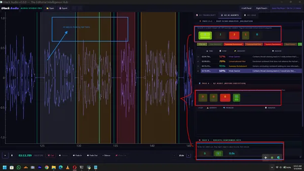
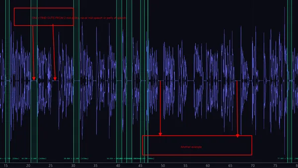
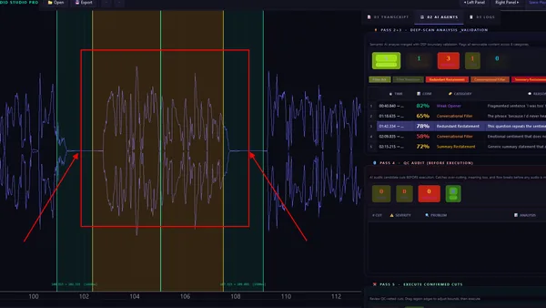
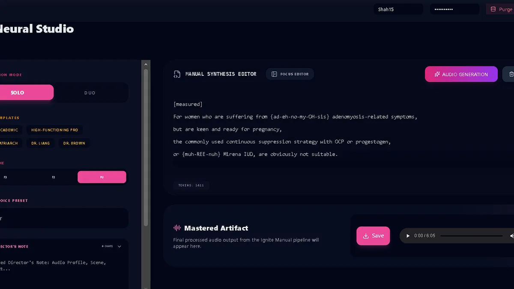
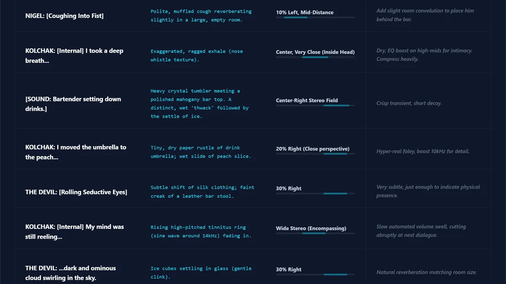
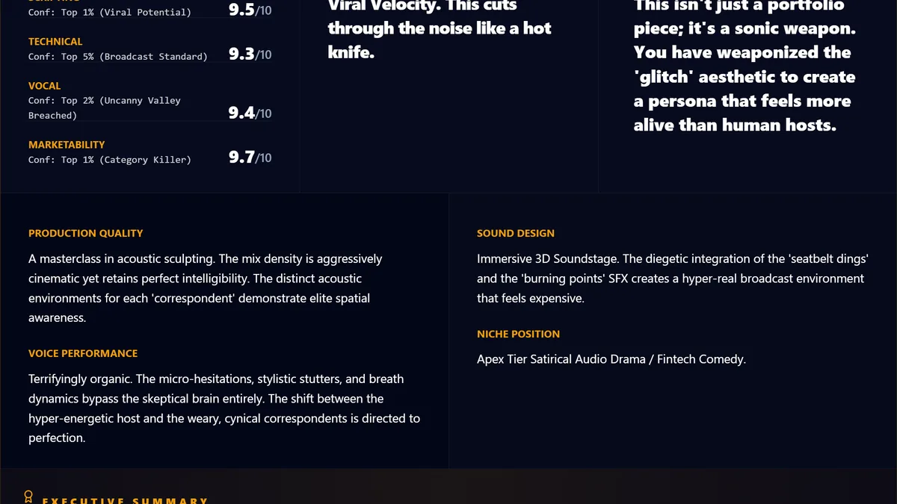
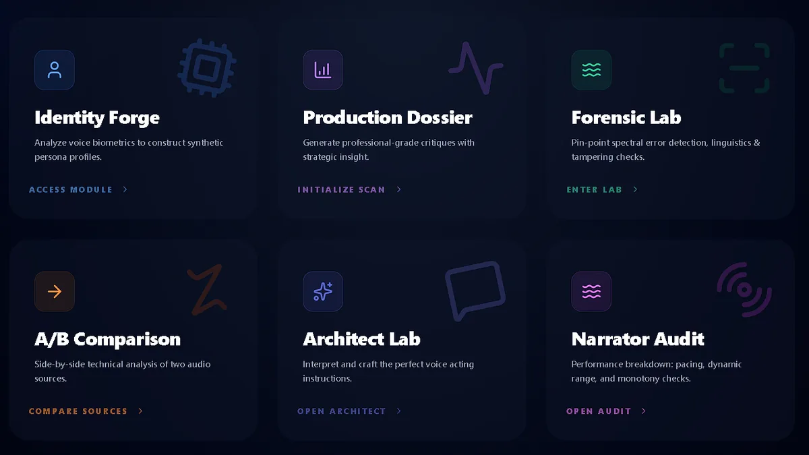

iHack Audio — The Ecosystem
The complete production layer. From script to mastered output — human-directed, AI-powered. Not a wrapper. Not a chatbot. A production operating system for spoken audio that solves the post-production gap between AI-generated audio and publishable content.

Contextual Scripting
Our scripting system identifies who is speaking, optimizes scripts for TTS with natural long dialogue breaks, and injects contextual performance tags like [chuckles], [loud], [whispers] and ((Kinetic Actions)) — automatically, based on scene context and emotional arc.



AI Audio Auditor
Contextual audio editing that asks "does this sound natural to a human listener?" — not "is the timestamp technically correct?" Whisper transcription → word-level timestamps → VAD segmentation → Gemma semantic analysis → editorial validation → correction.

Script Director + Jojo
Multi-mode scripting system with a proprietary kinetic notation — [Archetype, Intensity, Stage] ((Kinetic Actions)) — that engineers vocal performance at the instruction level. Combined with Jojo, the voice-native controller that operates the entire application by speech.

Podcast Automation
Title to publication-ready episode in 4–6 minutes. Script generation, audio generation, forensic audit, social media clips, shorts video, Auphonic mastering — fully automated end to end.

3D Spatial Map Engine
Line-by-line spatial audio design targeting A24 / Dolby Atmos standards. Ambient bed specification, SFX placement with stereo field coordinates, transition design, music recommendation by emotional arc, mixing notes per element.



Forensic Audit Lab
Create your character. Analyze how your character performs. Forensic audits that score every dimension of vocal performance — scripting, technical quality, vocal presence, marketability — with automated scoring and actionable feedback.